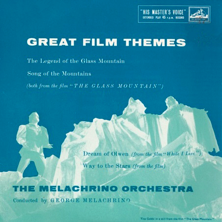

Saturday, November the 18th, 2017
back to: title, date or indexes

This 7” EP was in my parents' record collection. As a tiny tot, I found the image of the two lovers, turned to glass, frozen and immobile atop a mountain, absolutely haunting. And that blue!